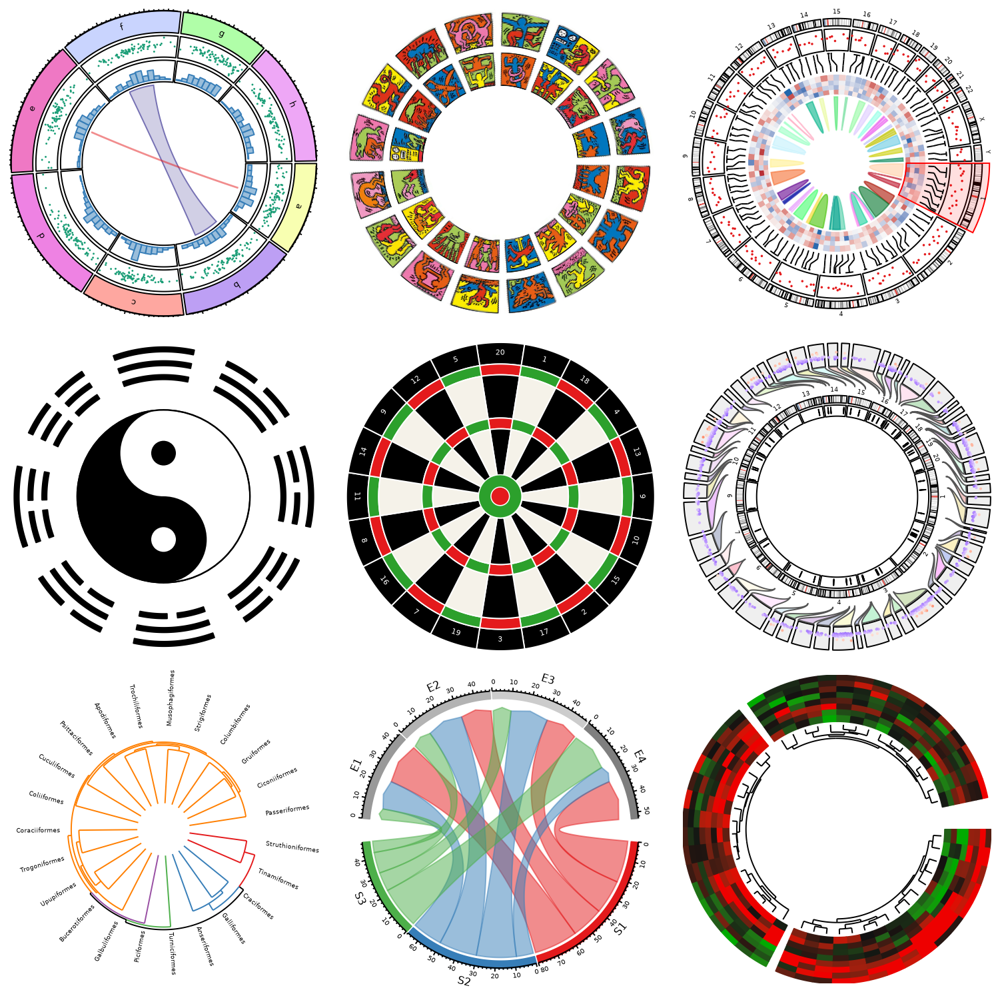
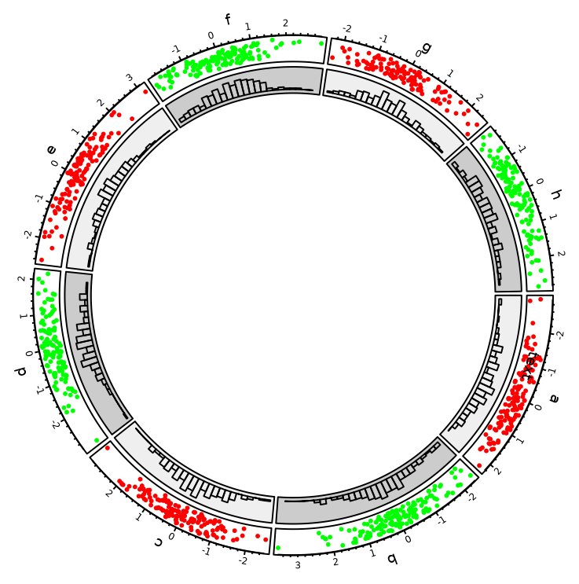
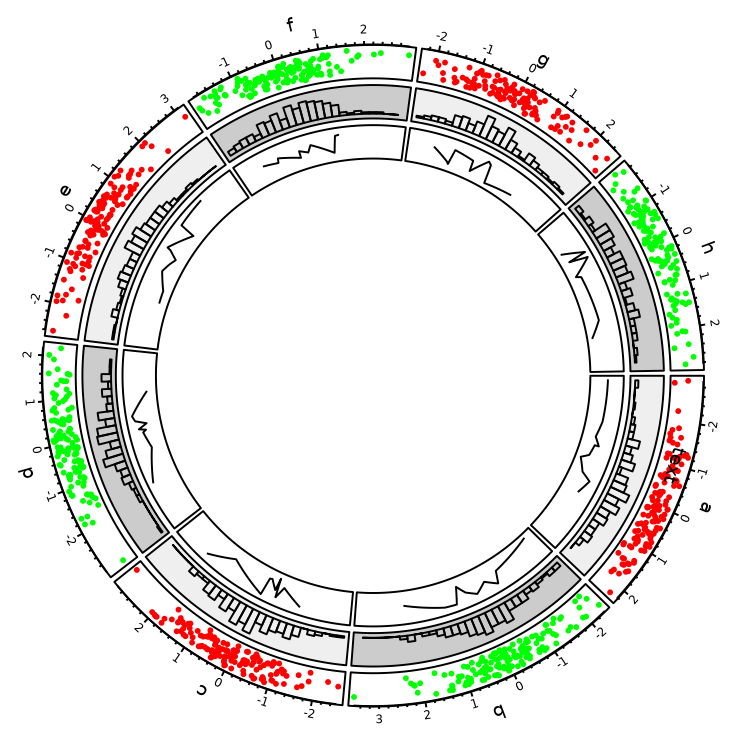
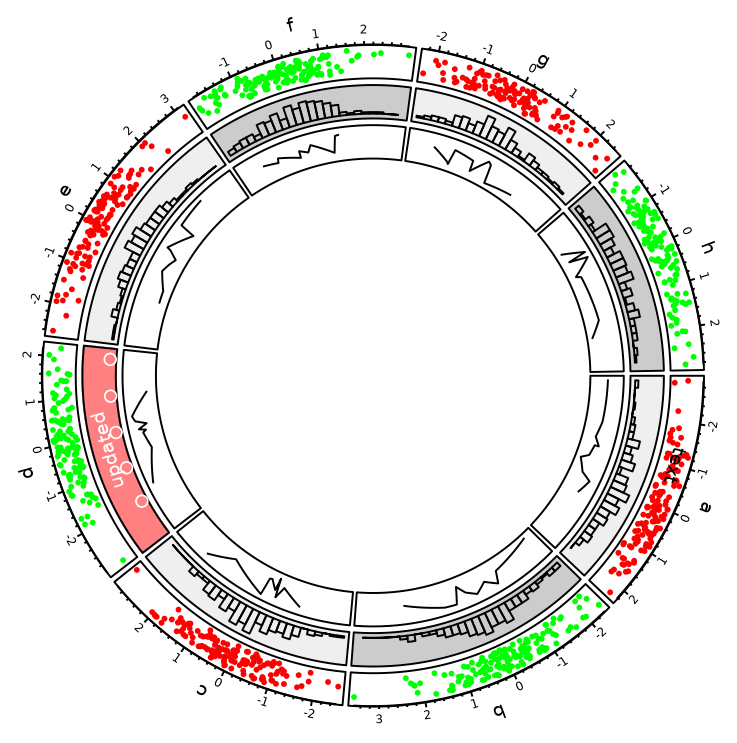
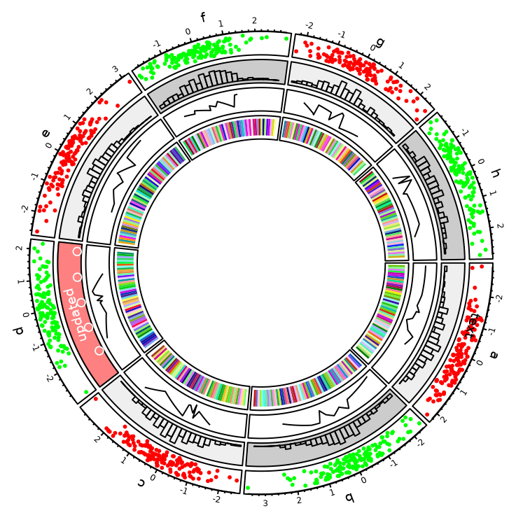
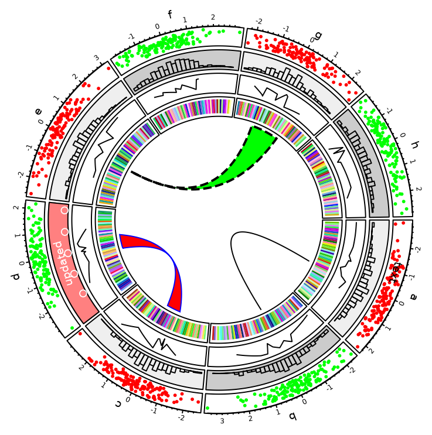

1 Introduction#
Circular layouts are effective for representing complex, multi-layered information. First, they compactly display data with long axes or many categories; second, they intuitively align multiple measurements on the same object across stacked tracks; third, they clearly reveal relationships between elements via interior links or ribbons.
Circos pioneered
circular layout visualization in Perl, becoming especially
influential in genomics—so much so that circular plots are commonly
called “circos plots”. circlize
brought that expressive circular grammar into R, and circlize-py
brings the full design directly into Python on top of
numpy, pandas, matplotlib,
scipy, and Pillow. Rather than wrapping an
external binary or generating static configuration files,
circlize-py integrates natively with Python data structures
and Matplotlib figures while keeping the flexibility and configurability
of Circos.
In this book, Part I introduces the general circular layout and graphics engine. Part II covers functions specifically designed for genomic datasets. Part III presents a comprehensive guide to visualizing relationships with Chord diagrams, and Part IV explores creative uses of the library.
1.1 Principle of design#
A circular layout is composed of sectors and tracks. Different categories are allocated into distinct sectors around the circle, while multiple measurements on the same category are arranged as concentric tracks stacked from the outside of the circle toward the center. The intersection of a sector and a track is called a cell (or grid, panel), which is the basic plotting unit in a circular layout—an imaginary rectangular plotting region mapped onto polar coordinates.
Because complex charts are built out of simple geometric primitives
such as points, lines, and polygons, circlize-py implements
low-level graphic functions inside circular cells so arbitrary
high-level visualizations can be composed without artificial
restrictions.
Currently, circlize-py provides the following
low-level graphic functions (mirroring R’s base
graphics names with a circos. prefix or
circos_ snake_case alias):
circos.points()(circos_points()): adds points in a cell.circos.lines()(circos_lines()): adds lines or filled area curves in a cell.circos.segments()(circos_segments()): adds line segments in a cell.circos.rect()(circos_rect()): adds curved rectangles in a cell.circos.polygon()(circos_polygon()): adds polygons in a cell.circos.text()(circos_text()): adds rotated or curved text in a cell.circos.axis()andcircos.yaxis(): add circular x-axes and radial y-axes in a cell.
The following function draws connections between two positions across the circle:
circos.link()(circos_link())
The following functions draw high-level graphics:
circos.barplot(): draws simple or stacked circular barplots.circos.boxplot(): draws circular boxplots.circos.violin(): draws circular violin plots.circos.heatmap(): draws split circular heatmaps with clustering.circos.raster(): draws raster images inside cells.circos.arrow(): draws circular arrows.
The following functions arrange and manage the circular layout:
circos.initialize(): allocates sectors on the circle.circos.track()(orcircos.trackPlotRegion()): creates plotting regions for all cells in a track.circos.update()(orcircos.updatePlotRegion()): clears and updates an existing cell.circos.par(): reads or sets global layout parameters.circos.info(): prints or plots metadata of the current circular plot.circos.clear(): resets graphic parameters and internal layout state.
Together, these building blocks allow you to create almost any kind
of circular figure. The showcase composite below displays nine diverse
circular visualizations generated directly with
circlize-py.

1.2 A quick glance#
Before diving into full details, let’s walk through a complete
multi-track example step by step to see how circlize-py
works in practice.
First, generate a synthetic dataset with a categorical
sectors column, numeric x values, and numeric
y values:
import matplotlib.pyplot as plt
import numpy as np
import pandas as pd
from circlize_py import CELL_META, circos, mm_y, rand_color
rng = np.random.default_rng(999)
n = 1000
df = pd.DataFrame(
{
"sectors": rng.choice(list("abcdefgh"), size=n, replace=True),
"x": rng.normal(size=n),
"y": rng.uniform(size=n),
}
)Next, initialize the circular layout. The circle is partitioned into
sectors according to the x-range within each category. When
x is supplied to circos.initialize(),
x is grouped by sectors and each sector’s
angular width is set proportionally to its data span. By default,
sectors start at $= 0^$ (3 o’clock in standard polar coordinates) and
proceed clockwise around the circle. Calling
circos.initialize() records the geometry internally without
drawing visible marks until the first track is added:
fig = plt.figure(figsize=(6.2, 6.2), dpi=140)
circos.par(track_height=0.1, points_overflow_warning=False)
circos.initialize(df["sectors"], x=df["x"])Here, circos.par(track_height=0.1) sets the default
radial height of newly created tracks to 0.1. Because
circlize-py always draws inside the unit circle (radius
1), 0.1 corresponds to 10% of the circle
radius. (See Section
2.7.2 for specifying heights in physical units such as
mm or cm.)
Notice that sector allocation only needs x-direction values (along the circumference); y-direction values (along the radius) are specified when creating individual tracks.
Once initialized, graphics are built track by track from the outside
inward. Always create a track with circos.track() (or
circos.trackPlotRegion()) before calling low-level plotting
functions inside its cells—analogous to creating a Matplotlib
Axes before calling plot() or
scatter(). Because x-ranges are fixed at initialization,
circos.track() only requires y (to derive
y-ranges automatically) or an explicit ylim=(ymin, ymax)
pair shared across the track:
def panel_t1(x, y):
circos.text(
CELL_META.xcenter,
CELL_META.cell.ylim[1] + mm_y(5),
CELL_META.sector_index,
)
circos.axis(labels_cex=0.6)
circos.track(df["sectors"], y=df["y"], panel_fun=panel_t1)
col = ["#FF0000", "#00FF00"] * 4
circos.trackPoints(df["sectors"], df["x"], df["y"], col=col, pch=16, cex=0.5)
circos.text(-1, 0.5, "text", sector_index="a", track_index=1)
Axes are usually placed along the outer rim of the outermost track.
Inside panel_fun, circos.track() visits each
cell in order and sets that cell as the “current” cell immediately after
creating its plotting region (detailed further in Section 2.6). Calling
circos.axis() inside panel_fun draws an x-axis
along the top (outside) edge of every cell.
Sector names are placed outside the first track using
circos.text() and CELL_META metadata. Adding
mm_y(5) shifts the text 5 mm radially outward in the cell’s
data coordinates (see Section 2.7.2).
Setting points_overflow_warning=False in
circos.par() suppresses warnings when drawing labels
outside cell borders. Alternatively, sector labels can be placed in a
dedicated borderless outer track (as
circos.initializeWithIdeogram() in Chapter 9 and
chordDiagram() in Chapter 14 do).
After creating the track, circos.trackPoints() adds
scatter points across all cells simultaneously. As discussed in Section 3.2, placing
circos.points() inside panel_fun is generally
more flexible, though circos.trackPoints() is convenient
for simple scatter tracks. Low-level functions like
circos.text() can also be called outside
panel_fun by supplying sector_index and
track_index explicitly (track_index defaults
to the most recently created track).
Now add histograms on the second track using
circos.trackHist(), a high-level track function that
creates a new track automatically. Fixing bin_size=0.2
ensures consistent bin widths across all sectors:
bgcol = ["#EFEFEF", "#CCCCCC"] * 4
circos.trackHist(df["sectors"], df["x"], bin_size=0.2, bg_col=bgcol, col=None)
For the third track, pass sectors, x, and
y to circos.track() so
circlize-py automatically subsets (x, y) for
each cell and passes them into panel_fun(x, y). Inside
panel_fun, we pick 10 random points per cell, sort them by
x, and connect them with circos.lines():
rng_t3 = np.random.default_rng(101)
def panel_t3(x, y):
ind = rng_t3.choice(len(x), size=10, replace=False)
x2 = x[ind]
y2 = y[ind]
od = np.argsort(x2)
circos.lines(x2[od], y2[od])
circos.track(df["sectors"], x=df["x"], y=df["y"], panel_fun=panel_t3)
Suppose we now want to revisit the second track
(track_index=2) and replace cell "d". Calling
circos.update() (or circos.updatePlotRegion())
erases the existing contents of that cell, updates its background
styling while preserving xlim and ylim, and
sets it as the current cell for subsequent low-level calls:
circos.update(sector_index="d", track_index=2, bg_col="#FF8080", bg_border="black")
circos.points(x=np.arange(-2, 3), y=np.repeat(0.5, 5), col="white")
circos.text(CELL_META.xcenter, CELL_META.ycenter, "updated", col="white")
Even after jumping back to update Track 2, the next
circos.track() call still appends a new track inward from
the innermost existing track (becoming Track 4). Here we omit
x and y data, provide only
ylim=[0.0, 1.0], and fill each cell with colored strips
using circos.rect() and rand_color(). Because
no x/y vectors are supplied to
circos.track(), x and y received
by panel_fun(x, y) are both None:
rng_t4 = np.random.default_rng(202)
def panel_t4(x, y):
xlim = CELL_META.xlim
ylim = CELL_META.ylim
breaks = np.arange(xlim[0], xlim[1], 0.1)
n_breaks = len(breaks)
circos.rect(
breaks[:-1],
np.repeat(ylim[0], n_breaks - 1),
breaks[1:],
np.repeat(ylim[1], n_breaks - 1),
col=rand_color(n_breaks - 1, seed=int(rng_t4.integers(1, 100000))),
border=None,
)
circos.track(ylim=[0.0, 1.0], panel_fun=panel_t4)
Finally, add links and ribbons in the center of the circle with
circos.link() to connect single points or intervals across
sectors (see Section 3.11 for full
options):
circos.link("a", 0, "b", 0, h=0.4)
circos.link("c", [-0.5, 0.5], "d", [-0.5, 0.5], col="red", border="blue", h=0.2)
circos.link("e", 0, "g", [-1.0, 1.0], col="green", border="black", lwd=2, lty=2)
Always call circos.clear() at the end of a circular plot
so internal layout state and circos.par() options are reset
cleanly before the next figure:
circos.clear()
fig.savefig("quick_glance.png", bbox_inches="tight", dpi=140)